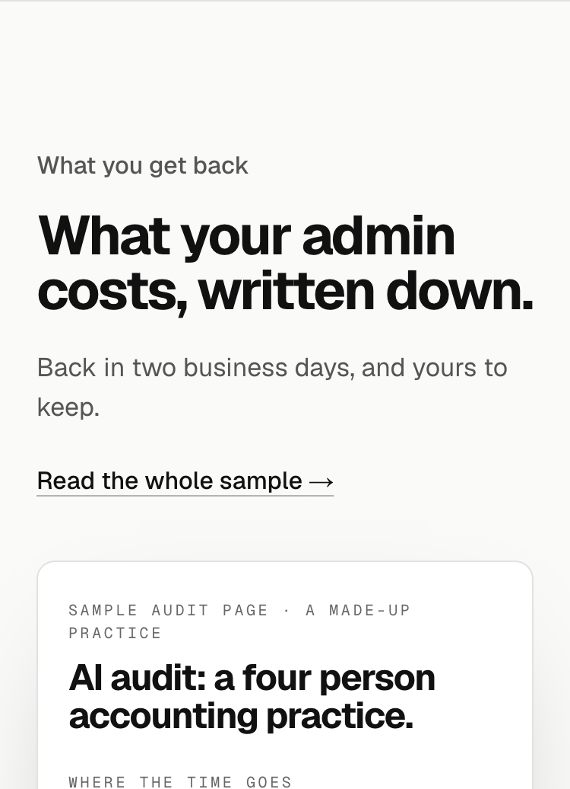
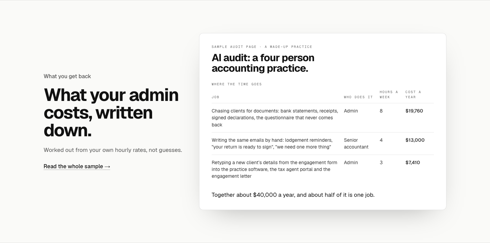
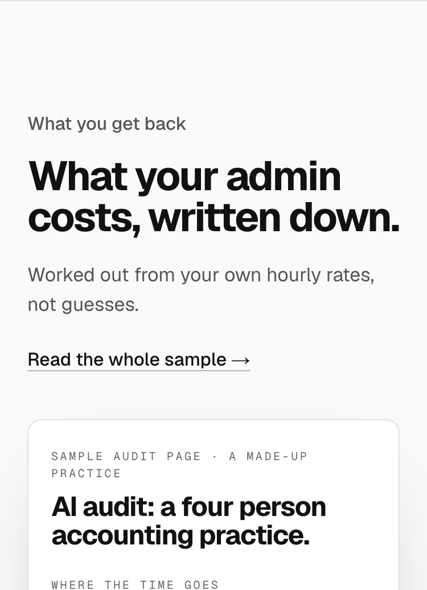

A. No lineThe heading, the link and the sheet. The made-up note moves into the sheet’s label. Recommended: the sheet now shows what the line used to list, and three times on this page Will has kept the page moving by dropping a line that explained.


32 lines, numbered so you can point at parts. Scored out of 5, a point each, half for partly: Picture (a word you can see), Prove (checkable on the page or the sample), Only us (would not work with a competitor’s name in front), Device, Will’s shape (plain, the owner’s words, no slogan couplets, fewer words over explaining). In every option the made-up note moves into the sheet’s label: "Sample audit page · a made-up practice".
| # | Line | Device | Picture | Prove | Only us | Device | Shape | Score /5 |
|---|---|---|---|---|---|---|---|---|
| 8 | Yours to keep, whether or not you build anything. | plain statement | 0.5 | 1 | 1 | 0.5 | 1 | 4 |
| 9 | The page is yours to keep, whatever you decide. | plain statement | 0.5 | 1 | 1 | 0.5 | 1 | 4 |
| 17 | Back in two business days, and yours to keep. | pair | 0.5 | 1 | 1 | 0.5 | 1 | 4 |
| 6 | Worked out from your own hourly rates, not guesses. | contrast | 0.5 | 1 | 0.5 | 1 | 0.5 | 3.5 |
| 12 | The jobs nobody wants, costed. | fact, kicker | 1 | 0.5 | 0.5 | 1 | 0.5 | 3.5 |
| 19 | What the chasing, retyping and reminding cost, in dollars a year. | three | 1 | 1 | 0.5 | 0.5 | 0.5 | 3.5 |
| 28 | From your own hours and rates, back in two business days, yours to keep. | three | 0.5 | 1 | 1 | 0.5 | 0.5 | 3.5 |
| 2 | Ever added up what the chasing costs you? | question | 1 | 0 | 0 | 1 | 1 | 3 |
| 4 | Every job, in hours and dollars, on one page. | the deliverable | 1 | 0.5 | 0.5 | 0.5 | 0.5 | 3 |
| 7 | Yours is worked out from your own hours and rates. | plain statement | 0.5 | 1 | 0.5 | 0 | 1 | 3 |
| 10 | Here it’s a made-up practice. In yours, the figures are your own. | mirror | 0.5 | 1 | 0.5 | 1 | 0 | 3 |
| 16 | Same page, your figures. | pair | 0.5 | 0.5 | 0.5 | 1 | 0.5 | 3 |
| 18 | Written up from your answers, back in two business days. | fact | 0.5 | 1 | 0.5 | 0.5 | 0.5 | 3 |
| 20 | The hours you guess at, in dollars. | twist | 0.5 | 0.5 | 0.5 | 1 | 0.5 | 3 |
| 25 | One page. Every job costed. The first one to hand over. | three | 1 | 0.5 | 0.5 | 1 | 0 | 3 |
| 29 | A made-up practice here. Yours uses your own figures. | pair | 0.5 | 1 | 0.5 | 0.5 | 0.5 | 3 |
| 1 | Ever added it up? | question | 0.5 | 0 | 0 | 1 | 1 | 2.5 |
| 3 | You know it takes hours. Here is what those hours cost. | fact, kicker | 0.5 | 0.5 | 0 | 1 | 0.5 | 2.5 |
| 5 | Yours comes back in two business days, worked out from your own figures. | fact | 0.5 | 1 | 0.5 | 0 | 0.5 | 2.5 |
| 11 | Where the week goes, and what it costs a year. | pair | 1 | 0.5 | 0 | 0.5 | 0.5 | 2.5 |
| 14 | It all adds up. This page shows how much. | familiar phrase | 0.5 | 0.5 | 0 | 1 | 0.5 | 2.5 |
| 23 | Ever wondered where Tuesday went? | owner’s moment | 1 | 0 | 0 | 1 | 0.5 | 2.5 |
| 27 | The cost of doing it all by hand, worked out. | fact, kicker | 0.5 | 0.5 | 0 | 0.5 | 1 | 2.5 |
| 15 | Shown here on a made-up accounting practice. | plain statement | 0.5 | 0.5 | 0 | 0 | 1 | 2 |
| 32 | No line. The heading, the link and the sheet carry it. | none | 0 | 1 | 0 | 0 | 1 | 2 |
| 13 | Turns out it all adds up. | familiar phrase | 0 | 0 | 0 | 1 | 0.5 | 1.5 |
| 21 | Hours you know about, in dollars you don’t. | mirror | 0.5 | 0 | 0 | 1 | 0 | 1.5 |
| 22 | This one is made up. Yours won’t be. | mirror | 0 | 0.5 | 0 | 1 | 0 | 1.5 |
| 26 | What it costs you to do it all by hand. | plain statement | 0.5 | 0 | 0 | 0 | 1 | 1.5 |
Back in two business days, and yours to keep.

Worked out from your own hourly rates, not guesses.

